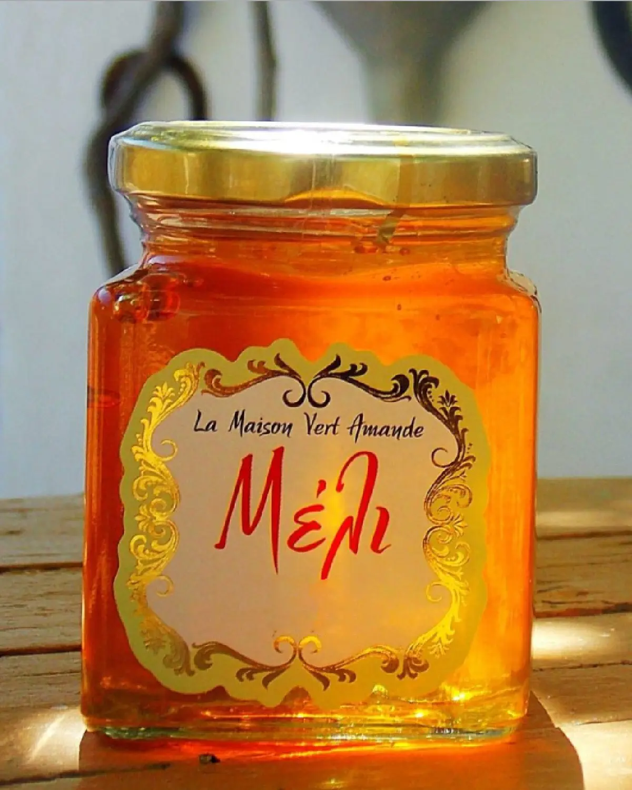

Nos produits
Producteurs de A à Z
Tous nos produits sont cultivés, récoltés, traités et mis en pot à La Maison Vert Amande.

Un
Le miel
Le miel a toujours occupé une place noble dans l’humanité. La couleur de sa robe, ses parfums harmonieux en ont fait un produit à part. Il incarne tour à tour la puissance, le plaisir, l’antidote, l’énergie, l’immunité et bien d’autres symboles.
Ses vertus ne sont plus à démontrer. Le miel semble même être un excellent produit pour participer au traitement du diabète, il agit également sur les lipides, le cholestérol, sur certaines enzymes hépatiques et sur le pancréas. Ce produit naturel et savoureux peut être consommé par les nourrissons de plus d’un an compte tenu de ses vertus nutritionnelles, tout comme le diabétique.
Depuis l’Antiquité, on utilise le miel à des fins thérapeutiques : Hippocrate recommandait déjà son utilisation pour soigner les plaies ouvertes et les infections de la gorge. De toute évidence, il est préférable de sucrer nos plats avec du miel plutôt qu’avec du sucre : le miel contient principalement du fructose et du glucose, un sucre à absorption lente qui convient particulièrement aux sportifs. Utilisé en pâtisserie, il retient l’humidité, ce qui permet aux gâteaux au miel de se conserver plus longtemps sans se dessécher.
La production de la miellerie La Maison Vert Amande est intégralement faite maison et artisanale. Nous récoltons notre miel avec le plus grand soin et nous procédons à l’extraction manuelle du miel avec mise en pot directe (ce qui le respecte et lui conserve ses subtils parfums floraux) ici à La Maison Vert Amande. Nous ne pratiquons pas le rachat et le travail à façon. Nous sommes producteurs de A à Z, ce qui fait toute la différence.
Nous garantissons un miel de haute qualité. L’étiquetage de nos produits a un design soigné. Notre miel n’est ni ensemencé, ni chauffé. Pour l’assurance d’une génétique de qualité, nos essaims sont productifs et en pleine santé.
Travailler ces insectes est fascinant. En respectant l’abeille et son travail, en sensibilisant le consommateur au respect de l’environnement, en donnant la possibilité aux consommateurs d’avoir accès à un miel de qualité, en recourant à l’entraide et à la coordination d’apiculteurs voisins, qui respectent eux aussi les valeurs de leurs pratiques (développement durable, biodiversité), plutôt que de s’ajouter à une concurrence qui affaiblit toute une profession, cela nous permet de vivre durablement de notre métier.
George apiculteur
George est apiculteur professionnel depuis plus de 40 ans. L’exploitation, très modeste au départ, s’est accrue au fil des années. Chaque année, la donne est différente. Les récoltes peuvent être brillantes ou faibles, voire quasiment nulles. Les conséquences sont immédiates : les investissements permettant d’accompagner le développement de l’exploitation doivent être remis en cause et judicieusement réfléchis.
On ne fait pas de l’apiculture comme on élève un chien ou un chat. On doit savoir qu’il y aura des impératifs et des contraintes et qu’il faudra faire face à des difficultés. L’apiculture demande réflexion, écoute, temps à consacrer, et stabilité sur le plan de la vie sociale et professionnelle. La vie doit être en accord avec l’apiculture.
À La Maison Vert Amande, nos moyens sont simples et efficaces. Parce que nous sommes des passionnés et parce que notre objectif est de proposer un miel de grande qualité, nous mettons tout en œuvre en contribuant chaque jour au développement et au bien-être des abeilles.
L’or liquide
L’huile d’olive
Originaire de la Méditerranée, l’olivier est apparu sous sa forme sauvage il y a probablement 60 000 ans. Le mot « huile », apparu au début du XIIe siècle, vient du latin oleum — huile d’olive. L’arbre est un symbole d’éternité, de paix et de force.e siècle, vient du latin oleum — l’huile d’olive. L’arbre est un emblème d’éternité, de paix et de force.
Ce liquide doré contient notamment des oméga-9 et des composés phénoliques aux propriétés antioxydantes. En cuisine, elle rehausse les salades, donne du caractère à la purée de pommes de terre et à l’agneau au four, et ravit le palais lorsqu’elle est associée à du yaourt au lait de brebis et au miel.
De l’olive à l’huile d’olive. Notre récolte s’étend de novembre à janvier. Trois phases — le broyage des olives non dénoyautées, le pressage de la pulpe, puis la décantation pour séparer l’huile de l’eau végétale — allient patience et savoir-faire. Il faut environ 5 kilos d’olives pour produire 1 litre d’huile.
Choisir une bonne huile. Recherchez la mention « extra vierge », qui signifie une acidité inférieure à 1 %. Plus l’acidité est élevée, plus la qualité est faible. Optez pour une huile monocépage : c’est la garantie qu’il ne s’agit ni d’un assemblage de deux millésimes, ni d’un mélange d’huiles provenant de différents pays.
Une bonne conservation de votre huile d’olive doit être au frais (15–20 °C) et à l’abri de la lumière. C’est pourquoi nous avons choisi une élégante bouteille en verre qui la protège parfaitement. Nos olives proviennent exclusivement de l’oliveraie de notre exploitation à Petrothalassa, et l’huile est vendue directement du producteur au consommateur, sans aucun intermédiaire. Sa saveur est douce et onctueuse, avec une touche de fraîcheur.


Trois
Les confitures
À La Maison Vert Amande, nous avons la chance de disposer de nombreux arbres fruitiers variés. Nos fruits et légumes sont cultivés dans le respect de l’environnement, sans pesticides. La ferme est une petite exploitation familiale, et les confitures sont élaborées selon des méthodes traditionnelles — un plaisir simple pour un moment privilégié.
Loin des techniques industrielles, je prépare mes confitures à la main. Je sélectionne les fruits avec soin, je les trie méticuleusement, je les dénoyaute exclusivement à la main et je les coupe un à un au couteau. Je traite les fruits par petites quantités et je les fais cuire dans une marmite traditionnelle en cuivre.
Mes confitures sont élaborées à partir de fruits 100 % frais récoltés le jour même, sans conservateurs, gélifiants, exhausteurs de goût ni colorants ajoutés. Une cuisson rapide, à raison de quelques kilos à la fois, permet de préserver la saveur, la couleur et la texture.
La quantité de sucre est déterminée en fonction de chaque fruit ou mélange de fruits. J’utilise du sucre blanc, le plus pur et le plus neutre, afin que seul l’arôme propre au fruit s’exprime. Mes confitures sont très peu sucrées et mises en pot encore chaudes, dans des bocaux stérilisés à 200 °C. Comme elles sont garanties sans conservateurs, conservez-les au réfrigérateur une fois ouvertes.
Recette
Gâteau à l’huile d’olive et à l’orange
- 7 cl d’huile d’olive
- 2 oranges bio
- 1 tasse de jus d’orange
- 5 g de levure chimique
- 75 g d’amandes moulues
- Une pincée de fils de safran
- 1/2 cuillère à café de sel
- 3 œufs
- 80 g de farine
- 1 pincée de sel
- 150 g de sucre
- 2 cuillères à soupe d’eau de fleur d’oranger
- Facultatif : 3 gouttes d’huile essentielle d’orange douce
Préchauffez le four à 180 °C. Mélangez le safran avec l’huile d’olive. Râpez le zeste des oranges, épluchez-les à cru, épépinez-les et réduisez-les en purée, puis ajoutez l’huile et le safran. Incorporez les œufs un à un, puis le sucre et l’eau de fleur d’oranger. Mélangez la farine, la levure, les amandes moulues et le sel dans un saladier, puis incorporez le tout à la préparation. Beurrez et farinez un moule à gâteau. Enfournez à 180 °C pendant 30 minutes, puis couvrez de papier d’aluminium, baissez la température à 160 °C et laissez cuire encore 30 minutes — un cure-dent enfoncé au centre doit ressortir sec.

Quatre
Spatholado ou huile de millepertuis
Le Spatholado — huile de millepertuis — est reconnu pour ses nombreuses propriétés. C’était un remède réputé chez les Spartiates de l’Antiquité, qui s’en servaient pour soigner leurs blessures après les combats, et il reste un « remède incontournable » depuis l’Antiquité jusqu’à nos jours.
Les fleurs s’épanouissent du début du mois de mai jusqu’en juin. Officiellement appelée Hypéricon, c’est l’une des fleurs les plus courantes de la flore grecque et elle pousse sur les terres en friche. La plante se distingue non seulement par sa couleur jaune vif, mais aussi par ses propriétés antidépressives, antiseptiques, antioxydantes, anti-inflammatoires, astringentes et cicatrisantes. Elle soulage également la sciatique, les douleurs rhumatismales, les douleurs articulaires, les contusions et les brûlures au premier degré, et est idéale pour les massages thérapeutiques et relaxants.
Sa préparation est simple. La fleur doit être cueillie le matin et préparée fraîchement récoltée. Le spatholado mûrit au soleil pendant environ 40 jours, en macérant dans une huile d’olive de grande qualité, et prend une couleur rouge profond avant d’être conservé dans un endroit lumineux.
Nous insistons sur ce point : le secret vient de l’huile d’olive, et nous utilisons celle que nous produisons nous-mêmes. Le spatholado que l’on trouve ailleurs est souvent de mauvaise qualité, fabriqué avec diverses graines et huiles qui lui donnent une couleur peu naturelle. Il ne doit jamais être conservé dans du plastique — uniquement dans du verre — et se garde environ un an.
REMARQUE : cette huile ne doit pas être utilisée en journée au soleil, ni par les femmes enceintes.